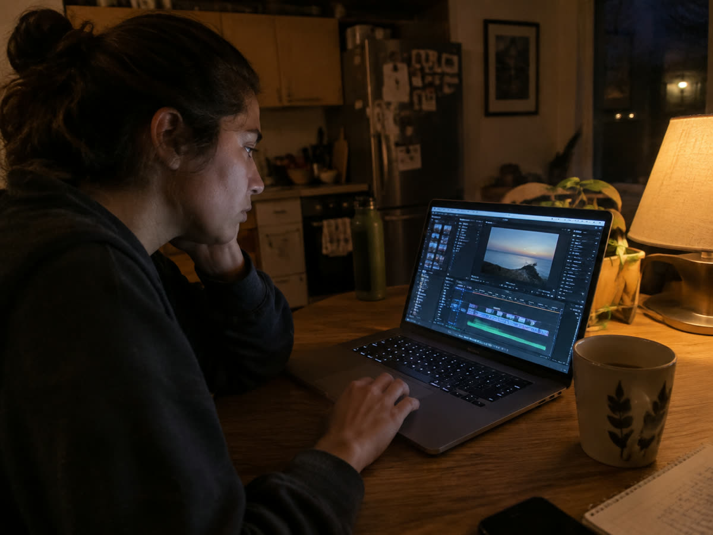

Social Media selbst machen oder abgeben?
Sie könnten es selbst. Die Frage ist, ob Sie es in zwölf Monaten noch tun werden.
Social Media ist eine der wenigen Marketingaufgaben, die ein Betrieb wirklich selbst erledigen kann. Die Technik kostet nichts, das Material liegt im Betrieb herum, und niemand kennt die Arbeit besser als die Leute, die sie machen. Trotzdem scheitern die meisten Versuche, und zwar nicht an Können, sondern an Kapazität.
Die Frage ist deshalb nicht, ob Sie es könnten. Die Frage ist, ob Sie es in zwölf Monaten noch tun werden.

Rechnen Sie den Aufwand einmal ehrlich durch
Ein fertiges Reel kostet Sie am Anfang zwei bis drei Stunden, später eine bis anderthalb. Darin steckt: aufnehmen, Material sichten, schneiden, Untertitel setzen und korrigieren, Ton wählen, Begleittext schreiben, veröffentlichen.
Bei zehn Videos im Monat sind das zwölf bis zwanzig Stunden. Das ist ein halber Arbeitstag pro Woche, dauerhaft, zusätzlich zum Tagesgeschäft. Wer diesen halben Tag hat, soll es selbst machen. Wer ihn nicht hat, wird nach sechs Wochen aufhören, und das ist schlechter als gar nicht anzufangen.
Warum die Menge nicht beliebig kleiner werden kann, steht unter Wie oft sollte man posten?
Was dafür spricht, es selbst zu tun
Sie sind da, wenn etwas Sehenswertes passiert. Der unerwartete Fund hinter der Wand, der Moment, in dem das Teil passt, der volle Gastraum an einem Dienstag: Das lässt sich nicht bestellen, und niemand von außen ist in diesem Moment im Haus.
Sie kennen die Fragen, die Kundschaft wirklich stellt. Die besten Reels beantworten genau diese Fragen, und sie stehen in keinem Konzept, sondern in Ihrem Telefonalltag.
Und es ist glaubwürdiger. Etwas unperfekt aufgenommen, aber von jemandem, der die Arbeit macht, wirkt oft besser als sauber produzierte Werbung.

Was dagegen spricht
Der Schnitt ist handwerklich anspruchsvoller, als er aussieht. Tempo, Schnittrhythmus, Tonmischung, Untertitel, die sitzen: Das ist erlernbar, braucht aber Monate, bis es verlässlich sitzt. In dieser Zeit laufen die Videos schlechter, was wiederum an der Motivation zehrt.
Dazu kommt der blinde Fleck. Wer dreißig Jahre im Beruf steht, hält vieles für selbstverständlich, was für Außenstehende genau das Interessante ist. Jemand von außen sieht diese Stellen sofort.
Und der Punkt, der am meisten wiegt: Regelmäßigkeit lässt sich nicht erzwingen, wenn die Woche voll ist. Der Dreh fällt aus, der Schnitt verschiebt sich, und irgendwann ist es vier Wochen her.
Der Mittelweg, der in der Praxis am besten funktioniert
Sie nehmen auf, jemand anderes schneidet. Sie halten im Alltag mit dem Telefon fest, was passiert, ohne Anspruch auf Perfektion. Der Schnitt, die Untertitel, die Planung und die Veröffentlichung liegen außerhalb.
Damit bleibt bei Ihnen der Teil, den nur Sie leisten können, und der Teil, der dauerhaft Zeit frisst, liegt woanders. Für die meisten Betriebe ist das die tragfähigste Aufteilung, und sie ist deutlich günstiger als ein voller Drehtag jeden Monat.
Wie viel welche Variante kostet, steht unter Was kostet Social Media? Was wir im vollen Umfang übernehmen, steht unter Social Media Management.
Eine einfache Entscheidungshilfe
Probieren Sie es vier Wochen lang selbst, mit zwei Videos pro Woche. Nicht zwei Wochen, sondern vier, weil die erste Woche immer gut läuft. Danach wissen Sie, ob es in Ihren Alltag passt.
Wenn es passt, machen Sie weiter und holen sich höchstens beim Schnitt Hilfe. Wenn nicht, geben Sie es ab, bevor das Profil einschläft. Ein Profil, das ein halbes Jahr stillsteht, ist schwerer wieder in Gang zu bringen als eines, das nie angefangen hat. Was eine Betreuung bei Ihnen kosten würde, erfahren Sie im Erstgespräch. Dann lassen sich beide Wege vergleichen.


Lernen wir uns kennen.
15 Minuten am Telefon oder per Video. Danach wissen Sie, ob und wie Social Media für Ihren Betrieb funktioniert.